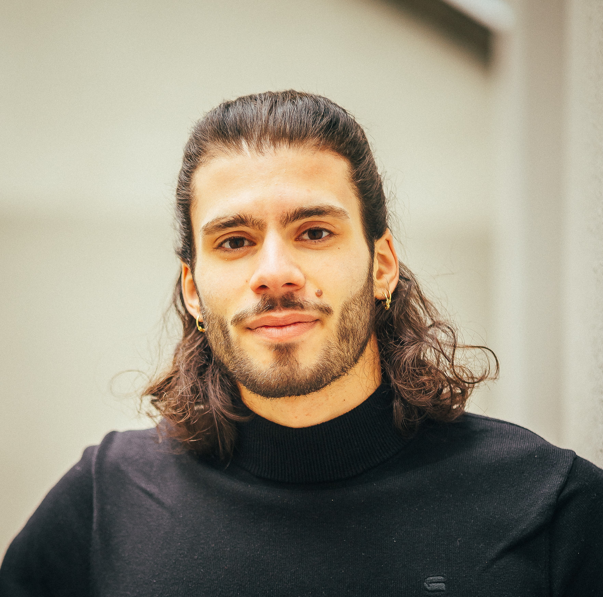

Hi, I'm a sports scientist and certified Neuroathletic Trainer with a deep passion for movement and how the human brain works. My journey into neuroscience began with the Feldenkrais Method, which opened my eyes to how movement and awareness shape performance, healing, and creativity.
After completing my Bachelor's degree in Sport Science, I dove into the world of neuroathletics with Z-Health — fascinated by how targeted brain-based training can unlock new levels of physical and mental potential. I now integrate this approach not only in performance and rehab settings but also in my own artistic work as a dancer and creative.
I'm active in triathlon, tennis, calisthenics and really, anything that challenges my body and mind. Above all, I love to dance. I run with my partner a small dance school focused on Brazilian Zouk, and I truly believe that dancing is one of the best workouts you can do for your body and your brain.
Whether in training, therapy, or the creative process, my goal is to help people move smarter, feel stronger, and live more fully—guided by the intelligence of the nervous system. If you want to get to know me better click on my personal Instagram account.
Click here to find my Z-Health Certifications.
Hallo, ich bin Sportwissenschaftler und zertifizierter Neuroathletiktrainer mit einer tiefen Leidenschaft für Bewegung und die Funktionsweise des menschlichen Gehirns. Meine Reise in die Neurowissenschaft begann mit der Feldenkrais-Methode, die mir die Augen dafür öffnete, wie Bewegung und Bewusstsein Leistung, Heilung und Kreativität prägen.
Nach Abschluss meines Bachelor-Studiums in Sportwissenschaft tauchte ich mit Z-Health in die Welt der Neuroathletik ein – fasziniert davon, wie gezieltes gehirnbasiertes Training neue Ebenen des physischen und mentalen Potenzials freisetzen kann. Ich integriere diesen Ansatz nun nicht nur in Leistungs- und Reha-Settings, sondern auch in meine eigene künstlerische Arbeit als Tänzer und Kreativer.
Ich bin aktiv im Triathlon, Tennis, Calisthenics und eigentlich allem, was meinen Körper und Geist herausfordert. Vor allem aber liebe ich es zu tanzen. Zusammen mit meiner Partnerin betreibe ich eine kleine Tanzschule mit Fokus auf Brazilian Zouk, und ich glaube wirklich, dass Tanzen eines der besten Workouts ist, die du für deinen Körper und dein Gehirn machen kannst.
Ob im Training, in der Therapie oder im kreativen Prozess – mein Ziel ist es, Menschen dabei zu helfen, intelligenter zu bewegen, sich stärker zu fühlen und erfüllter zu leben – geleitet von der Intelligenz des Nervensystems. Wenn du mich besser kennenlernen möchtest, klick auf meinen persönlichen Instagram Account.
Klick hier um meine Z-Health Zertifizierungen zu finden.